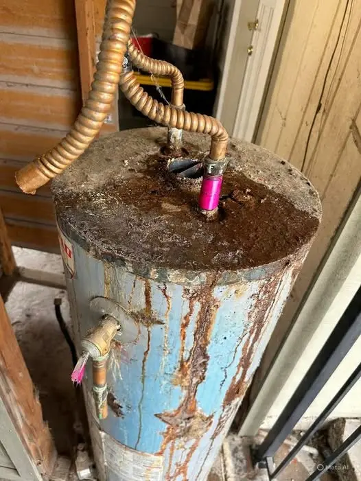
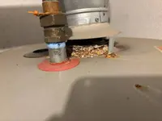

Common Causes in Nampa Homes
- Depleted Anode Rod — The sacrificial anode rod attracts corrosive elements in the water, protecting the steel tank liner. Once it's depleted — sooner in Nampa's hard water than the manufacturer's stated interval — the tank itself begins to corrode, releasing rust particles into your hot water.
- Internal Tank Corrosion — Once corrosion has started, rust-colored water is a direct symptom. This cannot be reversed—only replacement resolves ongoing tank corrosion.
- Sulfur / Rotten Egg Smell — Caused by a reaction between the magnesium anode rod and naturally occurring sulfate-reducing bacteria, producing hydrogen sulfide gas. More common in well water but can occur with municipal supply too.
- Sediment Stirred Up in the Tank — Mineral sediment at the tank bottom can cause temporarily cloudy or slightly discolored water, especially after the tank hasn't been used for a while or after a flush.
- Galvanized Pipe Corrosion — In older Nampa homes, corroding galvanized steel pipes (not the water heater itself) can be the actual source of rust-colored water. Testing both hot and cold water helps isolate the source.

Safe Homeowner Diagnostic Checks
- Test both hot and cold water separately. If only hot water is discolored, the water heater is the likely source. If both are affected, the issue may be in your home's plumbing or the municipal supply.
- Run the hot water for several minutes and observe if the discoloration clears (suggesting stirred sediment) or persists (suggesting active corrosion).
- Note the smell — a sulfur/rotten-egg odor specifically in hot water points to the anode rod reaction described above.
- Check the age of your water heater. Units over 6-8 years old are at higher risk of anode rod depletion and beginning corrosion.
When to Call a Professional
- Rust-colored water persists even after running the tap for several minutes
- A sulfur smell is present specifically in hot water
- Your water heater is over 6 years old and has never had the anode rod inspected
- You notice both discolored water and reduced hot water output (a sign of significant sediment or corrosion)
- You're unsure whether the source is the water heater or home plumbing
Cost Context
| Service | Typical Cost Range |
|---|---|
| Anode rod replacement | $120 – $200 |
| Sediment flush | $120 – $180 |
| Full water heater replacement (active corrosion) | $1,300 – $2,500 |

Rusty or Discolored Water FAQs
Rusty or discolored hot water almost always originates from the water heater tank itself—either from a depleted anode rod allowing internal corrosion to begin, or from mineral sediment stirred up inside the tank. Nampa's hard water accelerates anode rod depletion, making this a common issue in the area.
A sulfur or rotten-egg smell in hot water (but not cold) is typically caused by a chemical reaction between the magnesium anode rod and sulfate-reducing bacteria in the water, producing hydrogen sulfide gas. Replacing the anode rod with an aluminum or zinc-alloy rod usually resolves this.
Rust-discolored water from your own water heater (as opposed to municipal supply issues) is generally not a health hazard for bathing or washing, but it's not recommended for drinking or cooking. It also signals your tank is corroding internally and needs professional evaluation soon.
Yes, if caught early. If the anode rod is depleted but the tank hasn't yet begun significant corrosion, replacing the anode rod can resolve rotten-egg odor and stop further internal corrosion. If the tank has already begun rusting through, replacement of the whole unit is usually necessary.